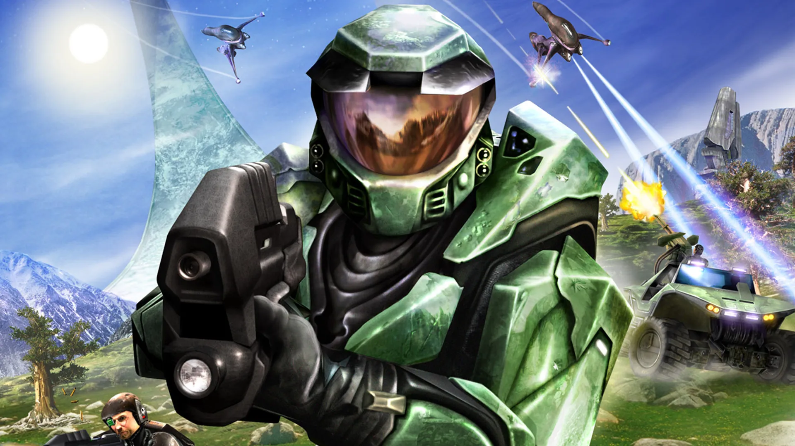

Premiant Al Jugador
Punts de reaparició
En tots aquestos jocs, la mecànica de tornar al principi o a un checkpoint després de morir és crucial per mantenir la tensió, el repte i l'emoció del joc. A més, també ajuda a evitar la frustració dels jugadors al no haver de repetir-se massa temps i es converteix en una part integral de l'experiència de joc.
5 Exemples de reaparicions en jocs
-
Super Mario Bros:
En el clàssic de Nintendo, si Mario perd totes les vides, és enviat al principi del nivell actual. Aquesta mecànica és una característica icònica dels jocs de plataformes i ajuda a mantenir el repte del joc, mentre que anima els jugadors a intentar de nou.

-
The Legend of Zelda: Ocarina of Time:
En aquest joc d'aventures, quan Link mor, és enviat de nou al principi de la mazmorra actual o al darrer punt de guardatge. Aquesta mecànica ajuda a mantenir la sensació de risc i recompensa l'exploració cautelosa i la planificació estratègica.

-
Call of Duty: Modern Warfare:
En la saga Call of Duty, quan el jugador mor durant una missió de campanya, és enviat al darrer checkpoint. Aquest sistema permet als jugadors superar segments difícils sense haver de repetir tota la missió, i crea una experiència més fluida i emocionant.

-
Resident Evil 2 (Remake):
En aquest joc de supervivència de terror, quan el jugador mor, ha de tornar al darrer punt de guardatge. Aquesta mecànica crea una sensació d'ansietat i vulnerabilitat, ja que els jugadors han de ser conscients de la seva salut i recursos disponibles.

-
Halo: Combat Evolved:
En aquest joc d'acció en primera persona, quan el jugador mor, és enviat al darrer checkpoint automàtic. Aquest sistema ajuda a mantenir la fluïdesa de la jugabilitat i permet als jugadors centrar-se en la seva estratègia i acció en lloc de preocupar-se per la repetició de segments ja superats.

Els diferents premis
Los premios en los videojuegos, ja sigui en forma de recompenses en el joc o en la vida real, són una manera de motivar als jugadors, reconèixer els seus esforços i fomentar la participació.
5 Exemples de reaparicions en jocs
-
Objectes o Equipament:
Exemple: En "World of Warcraft", els jugadors poden obtenir objectes, armes o armadures úniques com a recompensa per completar missions o derrotar bosses.
-
Moneda de Joc:
Exemple: En "Fortnite", els jugadors guanyen V-Bucks com a recompensa per completar desafiaments, que poden ser utilitzats per adquirir articles cosmètics o passar de batalla.
-
Habilitats:
Exemple: En "The Elder Scrolls V: Skyrim", els jugadors poden millorar les seves habilitats en combati, màgia o arts furtives a mesura que avancen en el joc.
-
Títols o Reconeixement en el Joc:
Exemple: En "Overwatch", els jugadors guanyen insígnies i títols específics com a recompensa per assolir fites dins del joc, com ara assolir certs nivells o obtenir una quantitat determinada de victòries.
-
Cosmètics o Aparença del Personatge:
Exemple: En "League of Legends", els jugadors poden obtenir skins o aspectes únics per als seus personatges com a recompensa per assolir objectius en el joc o a través de recompenses de temporada.
-
Punts d'Experiència o Nivells:
Exemple: En "Pokémon GO", els jugadors guanyen punts d'experiència per atrapar Pokémon, visitar poképarades i participar en raids, el que els permet avançar de nivell i desbloquejar recompenses addicionals.
-
Entrades o Accés a Contingut Exclusiu:
Exemple: En "Rocket League", els jugadors poden guanyar claus com a recompensa per completar desafiaments, que poden ser utilitzades per desbloquejar caixes que contenen articles exclusius.
-
Recompenses de la Comunitat o Trofeus:
Exemple: En PlayStation Network, els jugadors guanyen trofeus per assolir determinats objectius en els jocs, com ara completar totes les missions o assolir un percentatge específic d'èxits.
-
Descàrregues Digitals o Contingut Addicional:
Exemple: En "Assassin's Creed Odyssey", els jugadors poden obtenir descàrregues digitals gratuïtes o contingut addicional com a recompensa per completar desafiaments específics dins del joc.
High Score i Achievements
l "High Score" i els "Achievements" són dos elements clau en molts videojocs que afavoreixen la competició i el reconeixement dels jugadors.
High Score (Puntuació Màxima):
-
El "High Score" és una puntuació que reflecteix el millor rendiment d'un jugador en un joc determinat.
-
Aquesta puntuació és típicament associada amb jocs clàssics d'arcada i altres títols on els jugadors competeixen per aconseguir la puntuació més alta possible.
-
Els "High Scores" poden ser guardats localment al joc, o bé, en línies, en taules de classificació en línia, permetent als jugadors comparar les seves puntuacions amb altres jugadors de tot el món.
-
Aquests "High Scores" poden canviar a mesura que els jugadors millorin les seves habilitats i descobreixin noves estratègies per maximitzar les seves puntuacions.
Achievements (Elogis o Assoliments):
-
Els "Achievements" són objectius o metes específiques que els jugadors poden assolir dins d'un joc.
-
Aquests objectius poden ser variats i incloure completar missions, derrotar bosses, recollir objectes, o fins i tot realitzar tasques més úniques i desafiant.
-
Quan un jugador compleix un "Achievement", normalment s'aconsegueix una recompensa, com ara punts d'experiència, objectes especials, títols o reconeixements especials dins del joc.
-
Els "Achievements" poden ser una manera d'afegir rejoveniment al joc, ja que ofereixen als jugadors nous reptes per superar després de completar la història principal o altres activitats principals del joc.
-
Molts sistemes de joc, com Steam, Xbox Live i PlayStation Network, ofereixen integració "d'Achievements" a través dels seus propis sistemes de recompenses, que permeten als jugadors guanyar "Achievements" en diversos jocs i veure els seus assoliments acumulats al llarg del temps.
Desbloqueig de funcions en progressos
El desbloqueig de funcions en els videojocs en funció del progrés és una estratègia comuna utilitzada pels desenvolupadors per proporcionar una sensació de progressió i recompensa als jugadors.
Achievements (Elogis o Assoliments):
-
Nivell:
Els jugadors poden desbloquejar nous nivells dins del joc per accedir a funcions addicionals. Per exemple, en "Super Mario Odyssey", els jugadors desbloquegen nous mons a mesura que avancen en el joc.
-
Compra:
Les funcions es poden desbloquejar mitjançant la compra amb moneda de joc o moneda real dins del joc. A títol d'exemple, en "League of Legends", els jugadors poden adquirir nous personatges i skins amb moneda de joc.
-
Missions:
Completar missions o missions pot desbloquejar noves funcions o recompenses en el joc. Per exemple, en "The Witcher 3: Wild Hunt", completar missions principals i secundàries pot desbloquejar nous equipaments i habilitats.
-
Temps/hores:
Alguns jocs poden desbloquejar funcions o esdeveniments basats en el temps real del joc o en moments específics del dia. Un exemple seria "Animal Crossing: New Horizons", on certs esdeveniments i activitats només estan disponibles durant certs moments del dia o de l'any.
-
Assoliments:
Assolir objectius o reptes específics dins del joc pot desbloquejar assoliments que proporcionen recompenses o funcions addicionals. A mode d'exemple, en "Assassin's Creed: Odyssey", assolir determinades tasques pot desbloquejar insígnies i objectes únics.
-
Captures:
En alguns jocs, capturar o completar la col·lecció d'objectes específics pot desbloquejar funcions o recompenses addicionals. Per exemple, en "Pokémon Sword and Shield", completar la Pokédex pot donar accés a recompenses especials.
-
Habilitat:
Els jugadors poden desbloquejar noves habilitats o característiques en funció del seu progrés i experiència dins del joc. A títol d'exemple, en "The Elder Scrolls V: Skyrim", els jugadors milloren les seves habilitats a mesura que les utilitzen.
-
Nombre de jugadors o acompanyants:
En jocs multijugador, les funcions addicionals es poden desbloquejar en funció del nombre de jugadors que participen en una partida. Per exemple, en "Minecraft", l'ajuda d'altres jugadors pot accelerar el progrés i desbloquejar funcions addicionals.
-
Events:
Els esdeveniments especials o temporals en el joc poden desbloquejar recompenses o funcions úniques disponibles només per un temps limitat.
-
Raça o Classe:
En jocs de rol, desbloquejar funcions addicionals pot estar relacionat amb la selecció de raça o classe del personatge. Per exemple, en "The Elder Scrolls Online", cadascuna de les diferents races té habilitats úniques.
-
Terreny:
A mesura que els jugadors exploren nous terrenys o regions dins del joc, poden desbloquejar noves funcions o objectes disponibles només en aquestes àrees. Per exemple, en "The Legend of Zelda: Breath of the Wild", explorar nous territoris pot portar a la descoberta de nous santuaris i armes.